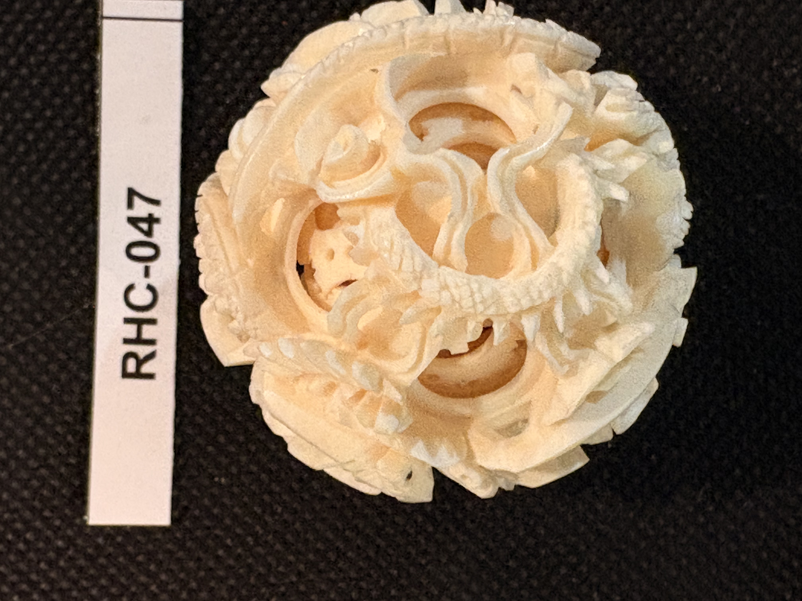
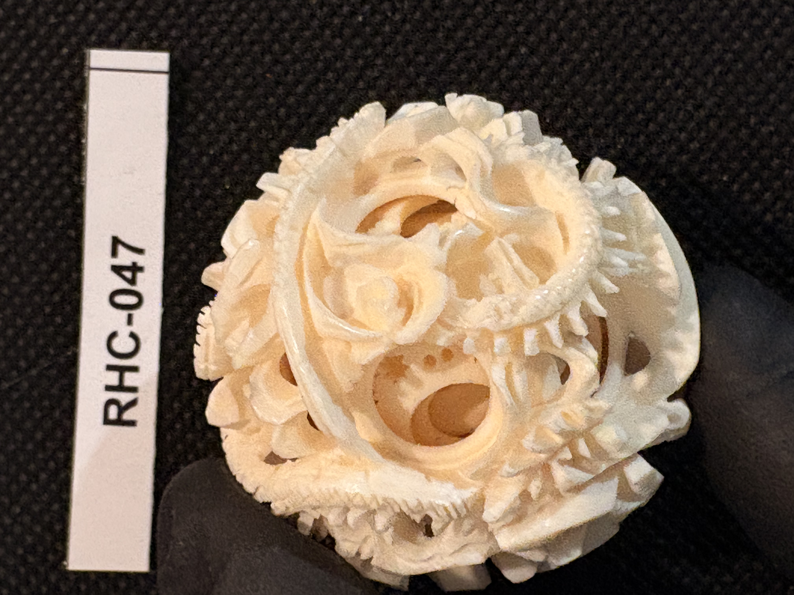
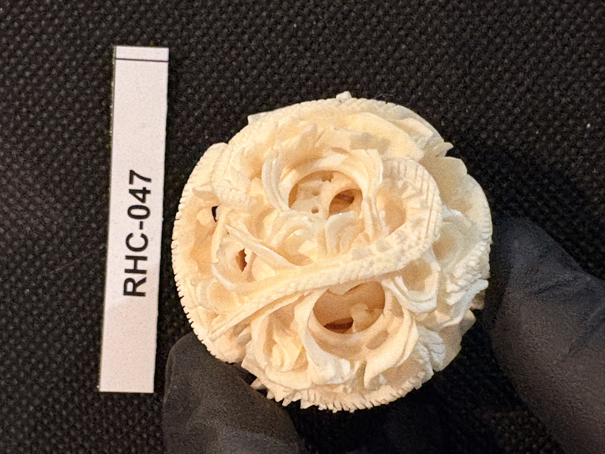

RHC-047 reviewed
Carved Ivory Chinese "Puzzle Ball" (Mystery Ball) with Dragon and Floral Openwork



- Object Type
- A spherical Chinese-style carved ivory "puzzle ball" (concentric mystery ball) — a densely pierced openwork sphere with an outer layer carved in floral/foliate relief and a serpentine dragon motif, through which at least one loose inner concentric layer is visible and independently rotatable within the outer shell.
- Material
- Presumed ivory (cream-white, dense, fine detailed piercing and undercut carving).
- Dimensions (cm)
- length: 4.0cm — Overall diameter ~4.0cm estimated off the cm/inch ruler shown in photo a.
- Subject Matter
- A spherical openwork "puzzle ball" carved with an outer shell of dense floral/foliate relief and a coiled serpentine dragon winding across the surface; multiple circular apertures pierce through to at least one visible inner concentric ball layer, a hallmark of the traditional Chinese carved ivory/wood concentric ball technique.
- Artist Attribution
- unknown
- Date / Period
- undated (stylistic estimate: Chinese export carved ivory concentric puzzle ball)
- Mount / Display Stand
- None — unmounted, freestanding sphere; no view provided of a mount, stem, or base that might indicate it was originally paired with a stand or used as a finial (as with RHC-042's hairpins).
- Color / Technique
- Dense pierced/openwork carving with floral relief and a coiled dragon on the outer layer, revealing at least one inner concentric pierced-ball layer through the apertures; natural material coloring only, no ink work or paint.
- Condition Notes
- Ball appears intact with fine, delicate openwork carving preserved throughout; no visible losses to the fragile pierced elements across the 4 photos. Not physically examined.
- Distinguishing Features
- Largest and most complex example of the pierced/openwork 'puzzle ball' technique in the collection, following the smaller puzzle-ball finials atop RHC-042's hairpins; here the puzzle ball is the primary object itself rather than a decorative finial element, and shows at least one visible internal rotating layer.
- Legal / Regulatory Status
- Material not confirmed. If genuine ivory, species and import history would need confirmation before any loan/sale (CITES/ESA considerations for Chinese/Asian ivory in particular). Flag for legal review; not a legal determination.
- Rights / Copyright
- No attribution identified; copyright status undetermined.
- Keywords
- puzzle ball mystery ball concentric ball openwork pierced carving dragon Chinese export not flat-engraved
- Related Items
- RHC-042
- Status
- reviewed
- Date Cataloged
- 2026-07-15
Open Research Questions
Research finding (phase 3, 2026-07-15): Confirmed Chinese export 'devil's work ball' (鬼工球) tradition, centered in Canton (Guangzhou). Production ramped up after 1760 when foreign trade was restricted to Canton, peaked in the 18th-19th century as export curios for European/American buyers, with the earliest documented reference to the underlying carving form dating to a 1338 text describing an earlier Song-dynasty precursor. This supports a 19th-century Canton export dating for this piece, consistent with the 'Chinese export' keyword already on the item, and ties it stylistically to RHC-053 (also Canton export style). Number of internal concentric layers still needs physical count/inspection.